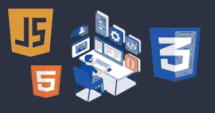

 Un Desarrollador Front-End diseña y contruye los elementos necesarios para la experiencia de usuario en una página web o aplicación móvil que incluye botones, menús, páginas, enlaces, gráficos y más. El front-end también conocido como del “lado del cliente”, se construye usando una combinación de tecnologías tales como el Lenguaje De Marcado de Hipertexto (HTML), Javascript y Hojas de Estilo en Cascada (CSS).
Regresar